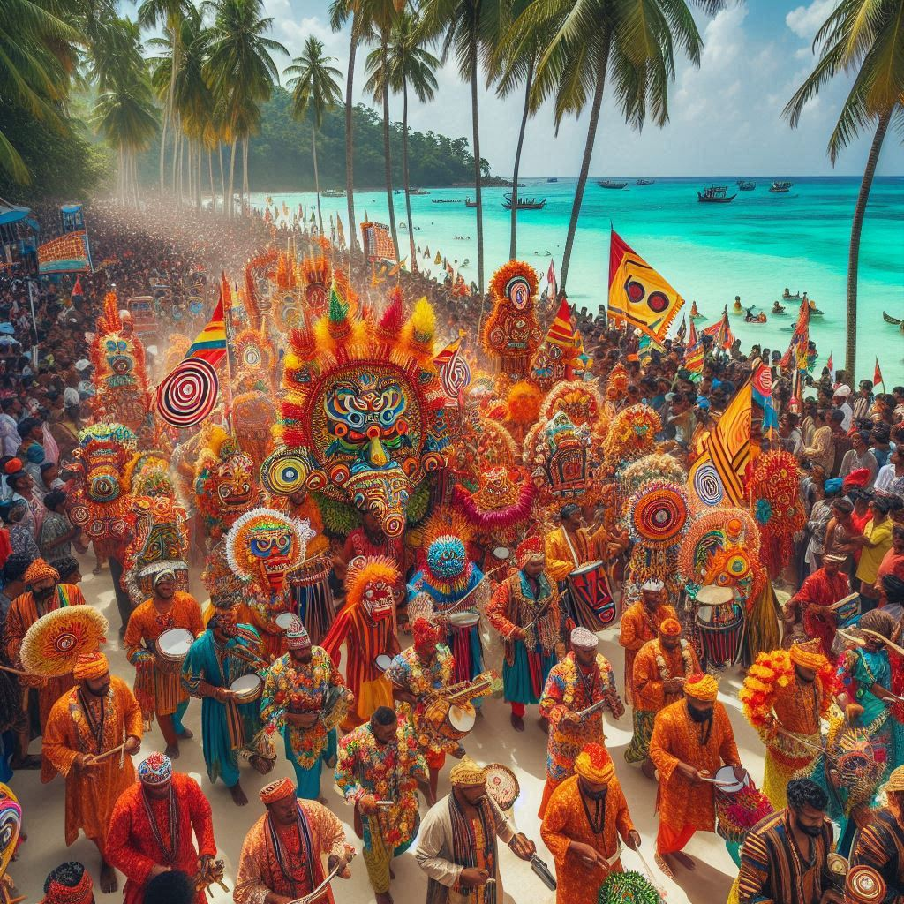
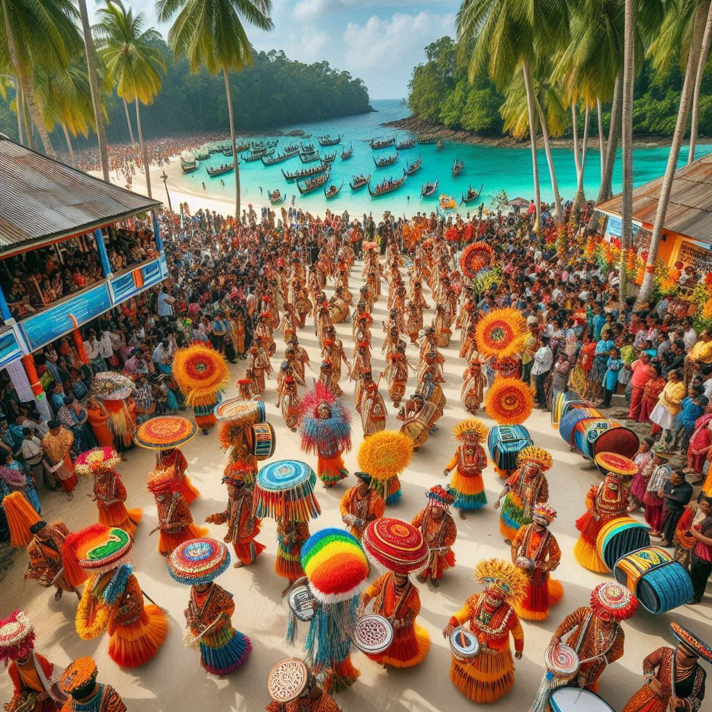

The Andaman and Nicobar Islands have a vibrant cultural scene, with festivals that reflect the diversity of the indigenous tribes, settlers from mainland India, and other communities living on the islands. Many of the festivals celebrated here are similar to those on the mainland, while some are unique to the region. Here’s a look at the major festivals of the Andaman and Nicobar Islands:
1. Island Tourism Festival
- Time of Celebration: January
- Significance: The Island Tourism Festival is the largest and most popular festival celebrated in Andaman and Nicobar. It is a 10-day event organized by the Andaman and Nicobar Administration to promote tourism and showcase the island’s culture and heritage.
- Highlights: The festival features cultural programs, dance performances, music, handicraft exhibitions, water sports activities, and food stalls offering local cuisine. Both local and international tourists participate, making it a major event on the islands.
2. Subhash Mela
- Time of Celebration: January (commemorating the birth anniversary of Subhash Chandra Bose)
- Significance: The festival celebrates the legacy of Netaji Subhash Chandra Bose, who raised the Indian national flag in Andaman in 1943, symbolizing the islands' role in the freedom struggle.
- Highlights: The mela includes cultural performances, parades, and exhibitions. It is mainly celebrated in Havelock Island and is a vibrant showcase of the local culture, with active participation from the residents and visitors.
3. Block Mela
- Time of Celebration: March-April
- Significance: The Block Mela is celebrated in different parts of the islands, primarily in rural areas. It showcases the agriculture and handicrafts of the local communities and provides a platform for farmers and artisans to display their products.
- Highlights: The festival is marked by stalls selling local produce, cultural performances, and exhibitions of traditional crafts. It helps promote the rural economy and fosters a sense of community.
4. Pongal
- Time of Celebration: January
- Significance: Pongal is celebrated by the large Tamil community in the Andaman and Nicobar Islands. It marks the harvest season and is a thanksgiving festival to the Sun God.
- Highlights: Traditional rituals are performed, and houses are decorated with kolams (rangoli). Families prepare special dishes like Pongal (sweet rice), and cultural events, such as dance and music performances, are organized.
5. Durga Puja
- Time of Celebration: September-October
- Significance: Durga Puja is one of the major festivals celebrated by the Bengali community in the Andaman and Nicobar Islands. It marks the victory of Goddess Durga over the demon Mahishasura.
- Highlights: Pandals (temporary structures) are set up, and idols of Goddess Durga are worshipped with great fervor. The festival is marked by cultural performances, food stalls, and immersion of the idols in the sea on the last day.


6. Diwali
- Time of Celebration: October-November
- Significance: Like the rest of India, Diwali is a major festival in the Andaman and Nicobar Islands. It is celebrated as the festival of lights, symbolizing the triumph of good over evil.
- Highlights: Homes and public spaces are illuminated with lamps and lights. Firecrackers are burst, and special prayers are offered in temples. Families come together for feasts and to exchange sweets.
7. Christmas
- Time of Celebration: December
- Significance: Christmas is celebrated with great enthusiasm, especially among the Christian community in the Andaman and Nicobar Islands.
- Highlights: Churches are decorated, and midnight masses are held. Celebrations include Christmas carols, feasts, and gatherings with family and friends.
8. Other Festivals
- Eid: Celebrated by the Muslim community, Eid-ul-Fitr and Eid-ul-Adha are observed with prayers, feasts, and community gatherings.
- Onam: Celebrated by the Malayali community, Onam marks the harvest season and includes traditional dance, music, and the preparation of the Onam Sadhya (a special meal).
- Vasant Panchami: Celebrated to honor Saraswati, the goddess of knowledge and learning. Educational institutions and homes organize prayers and cultural events.
Conclusion
The festivals of the Andaman and Nicobar Islands are a beautiful reflection of the region’s cultural diversity. From local tribal celebrations to festivals brought by settlers from mainland India, the islanders participate in a wide range of festivities that enhance their community spirit and preserve their heritage. These festivals also offer a glimpse into the unique way of life on the islands, making them attractive for both locals and tourists.